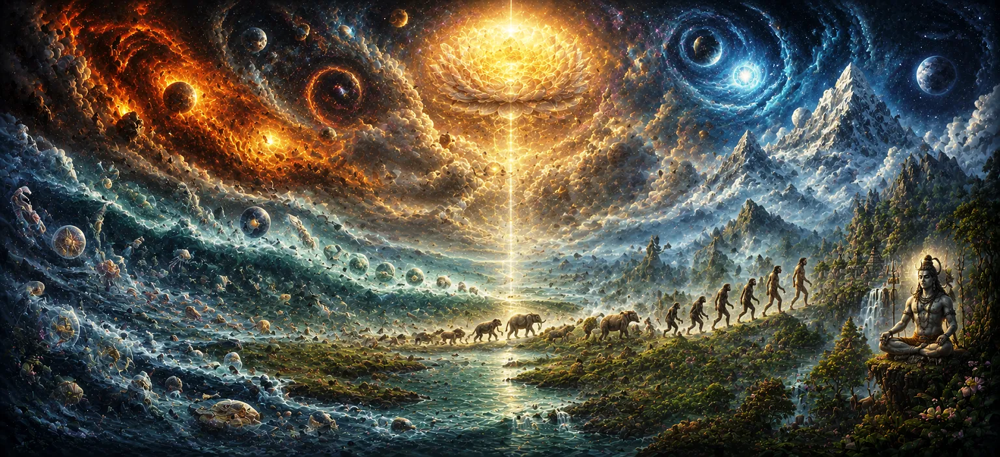

The Further Account of Creation
Expanding upon the structural architecture established in Chapter 30, Chapter 31 of Uma Samhita presents The Further Account of Creation, delving deeper into secondary creation (visarga) and the proliferation of living lineages. Moving from the broad classification of worlds to the intricate mechanics of biological and ancestral expansion, the scripture details how sages, mind-born sons, and diverse species populate the cosmos.
This chapter provides seekers with a detailed genealogical and systemic narrative, illuminating how divine intent continues to unfold through multiplying life forms and ancestral branches.
Core Topics in This Text (11 Pillars)
- 01 The Transition from Primary Framework to Secondary Creation →
- 02 The Role and Manifestation of the Mind-Born Sons of Brahma →
- 03 Multiplication of Species Through Ascetics, Sages, and Seers →
- 04 Expansion of Ancestral and Divine Lineages →
- 05 Diversification of Animal, Bird, and Plant Kingdoms →
- 06 Emergence of Asuras, Devas, and Specialized Entities →
- 07 The Procreative Contributions of Daksha and Other Prajapatis →
- 08 Balancing Opposing Forces within the Expanding Universe →
- 09 Karmic Encapsulation and Destinies of Procreated Beings →
- 10 Lord Shiva as the Ultimate Source Sustaining All Lineages →
- 11 Transitioning to Creation and the Lineage of Kashyapa →
1. The Transition from Primary Framework to Secondary Creation
This opening section explains how the static, elemental layout of the cosmos transitions into active reproduction and genealogical evolution through secondary creation (visarga).
Uma Samhita outlines the shift from cosmic structure to living propagation.
2. The Role and Manifestation of the Mind-Born Sons of Brahma
The text details the emergence of the great sages born directly from the mind of Brahma, who were endowed with supreme wisdom and tasked with establishing spiritual knowledge across the realms.
These divine progeny laid the foundational intellect for all future generations.
3. Multiplication of Species Through Ascetics, Sages, and Seers
Uma Samhita narrates how various spiritual masters, ascetics, and seers utilized yogic power and divine will to multiply and diversify life forms across different earthly and celestial territories.
Ascetic focus directly influenced the vitality and expansion of early species.
4. Expansion of Ancestral and Divine Lineages
The scripture tracks the branching out of primordial families, showing how ancestral houses were established to guide humanity and celestial entities through succeeding epochs.
Lineage preservation became vital for maintaining spiritual heritage.
5. Diversification of Animal, Bird, and Plant Kingdoms
Uma Samhita explores the extensive diversification of flora and fauna, detailing how countless species of beasts, birds, and vegetation adapted to inhabit every corner of the natural world.
The natural ecosystem flourished under divine orchestration.
6. Emergence of Asuras, Devas, and Specialized Entities
The text details the appearance of contrasting forces, including luminous devas and powerful asuras, illustrating the complex duality necessary for cosmic drama and moral testing.
This dynamic interplay drives the spiritual evolution of conscious beings.
7. The Procreative Contributions of Daksha and Other Prajapatis
Uma Samhita highlights the pivotal role played by Prajapati Daksha and his consort in populating the universe through numerous daughters married to key sages and deities.
These unions cemented the vast genealogical web of the Puranic universe.
8. Balancing Opposing Forces within the Expanding Universe
The scripture emphasizes how cosmic law continuously balances constructive and destructive tendencies, ensuring that expansion does not lead to chaotic collapse.
Equilibrium is maintained through divine oversight and natural regulatory laws.
9. Karmic Encapsulation and Destinies of Procreated Beings
Uma Samhita explains that every being born into the expanding universe carries intrinsic karmic traits, determining their lifespan, happiness, and ultimate path toward liberation.
Individual destiny is woven seamlessly into universal creation.
10. Lord Shiva as the Ultimate Source Sustaining All Lineages
The text reiterates that amidst the dizzying multiplication of species and dynasties, Lord Shiva remains the unchanging, eternal source sustaining every branch of existence.
All biological and spiritual lineages ultimately rest in Him.
11. Transitioning to Creation and the Lineage of Kashyapa
Having explored the broad secondary account of creation, Uma Samhita prepares to focus on one of the most prominent ancestral pillars—the expansive lineage of Sage Kashyapa in the next chapter.
This transition narrows the narrative toward specific ancestral branches that populated the world.
Spiritual Insight
Chapter 31 teaches us through eleven foundational pillars that creation is a continuous, unfolding tapestry driven by divine will, sages, and ancestral lineages. By understanding this expansion, seekers perceive the interconnected web of all life.
Frequently Asked Questions
① What is the primary focus of Chapter 31 in Uma Samhita?
The chapter details the further expansions of secondary creation, focusing on the unfolding of cosmic lineages and diversified living orders.
② How does this chapter advance the narrative from structural creation?
While Chapter 30 outlined the physical framework and geography of the universe, Chapter 31 elaborates on how species and ancestral lineages multiply and populate the realms.
③ What follows this chapter in the progression of Uma Samhita?
After exploring these further accounts of creation, the text moves directly into the specific foundational genealogy in Creation and the Lineage of Kashyapa.